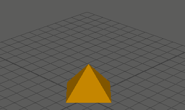

创建抖动变形器
- 选择要抖动的点或整个对象。
- 选择“变形 > (创建)抖动”(Deform > (Create) Jiggle) >
 。
。
- 单击“基本”(Basic)和“高级”(Advanced)选项卡，然后设定创建选项。
- 单击“创建”(Create)来创建抖动变形器。选项窗口将关闭。可以单击“应用”(Apply)使窗口保持打开状态并继续调整设置。
- 播放动画以检查结果。
注： 若要应用效果，您可以播放动画两次。
- 在播放动画之后，使用以下工具调整抖动：“绘制抖动权重工具”(Paint Jiggle Weights Tool)。请参见绘制抖动变形器权重。
为抖动变形器创建磁盘缓存
- 选择“变形 > (创建)抖动 > 抖动磁盘缓存”(Deform > (Create) Jiggle > Jiggle Disk Cache) > 。
- 将显示“创建磁盘缓存选项”(Create Disk Cache Options)窗口。
- 设定创建选项。
请参见抖动磁盘缓存选项。
- 执行下列操作之一：
- 单击“创建”(Create)以创建抖动缓存。选项窗口将关闭。
Maya 创建抖动缓存，并为场景中的每个抖动变形器创建一个永久性抖动缓存文件。这些文件位于当前项目的 data 文件夹中，并被命名为 scene_jigglen.mcj。